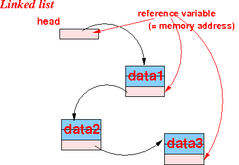
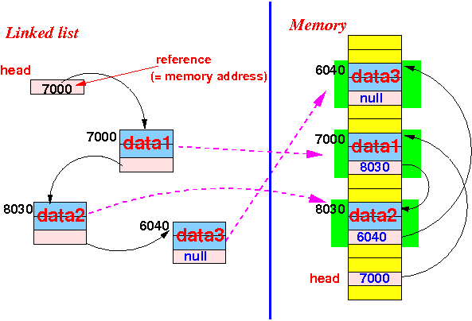

- Consider thsi simple
Java program that
illustrates a
linked list where
each list element contains
an int variable
(called "value").
This program travers the linked list and print the value component (= field) in the List object:
// The List object class: public class List { int value; List next; // instance methods omitted - not relevant for discussion }
// Traversing a list: public static void main(String[] args) { List head = makeList(); // initial list // head point to first element in the list List ptr; /* ============================================= CS171 material: traversing a linked list ============================================= */ ptr = head; while ( ptr != null ) { System.out.println( ptr.value ); // Access the "value" component ptr = ptr.next; // Access the "next" component } }A similar Java program should have been taught in CS171....
(I'm not a prophet, so I don't know what example the professor used in CS171. But he/she should have explained each of the statement that I used in the program and what the effect is of the statement)
- Example Program:
(Demo above code)

- Prog file: /home/cs255001/demo/4-linked-list/ListMain.java
How to run the program:
- To compile: javac ListMain.java
- To run: java ListMain
- What is a linked list:
- Linked list =
a linear
(single-way) linked data structure
used to
store information of
similar format
where:
- The size of list
can change easily
- The elements of the list
are stored in
sequence
- The location of
the i+1th-element
in the list
is stored
inside the
ith-element
of the list
- I.e.: we must consult the information stored in the ith-element of the list to find the i+1th-element of the list !!!
- The user only know the location of the first element of the list
- The size of list
can change easily
- Linked list =
a linear
(single-way) linked data structure
used to
store information of
similar format
where:
- Schematically:
 Note:
- The programmer
only has access
to the
variable
head
The variable head contains a reference (= address) of the first list element in the linked list
- The programmer (user) must access the first list element through the variable head
- A list element
will store some
useful information,
but it also
contains
one (and sometimes more)
variable
that contains:
- The reference (= address) of the next list element
- All list elements
must be chained
in sequence
- The only way to find all list elements is to traverse the chain ---- element by element !!!
- The last list element must contain the null value to indicate that there are no more list elements
- The programmer
only has access
to the
variable
head
- How a linked list is
stored inside the
computer memory
- The following memory content
represents a linked list of
3 list elements:
 Explanation:
- A linked list object can
be store in an
arbitrary location in
the computer memory
- The order in the linked list is established by the references in the linked list element
- The programmer
can only have
access
to the
variable
head
Through the variable head, the programmer can find:
- Data stored in the first list element (tagged as data1 in the figure)
- A reference to the second list element
- Through the
reference stored in the
first list element, the
programmer can find:
- Data stored in the second list element (tagged as data2 in the figure)
- A reference to the third list element
- And so on
- A linked list object can
be store in an
arbitrary location in
the computer memory
Note:
- A list object must
always contains
a reference variable
that contains the
address of its
subsequent list element
- This reference variable is often named next in the List class definition
We have discussed the reference concept already - see: click here
- The following memory content
represents a linked list of
3 list elements: